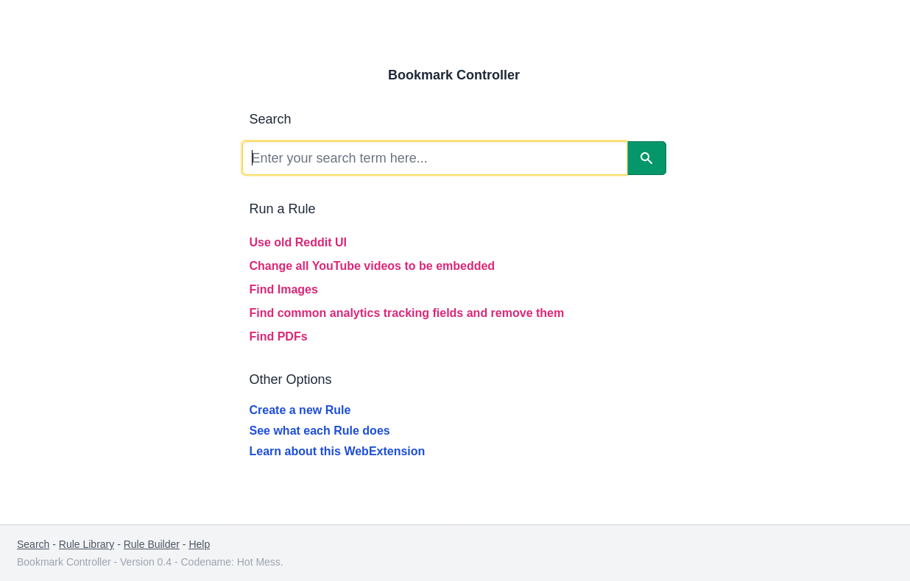
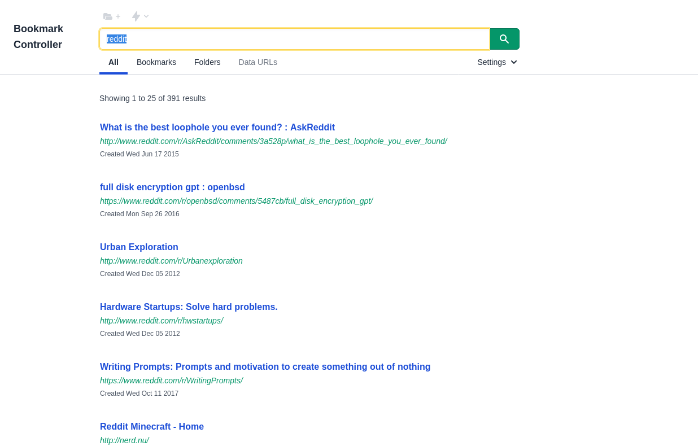
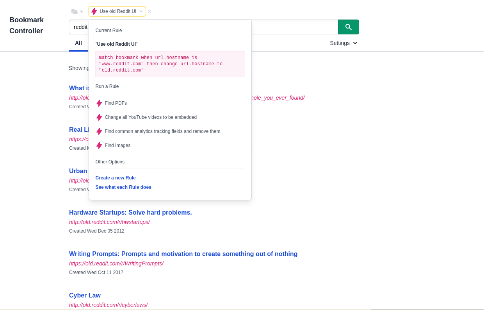
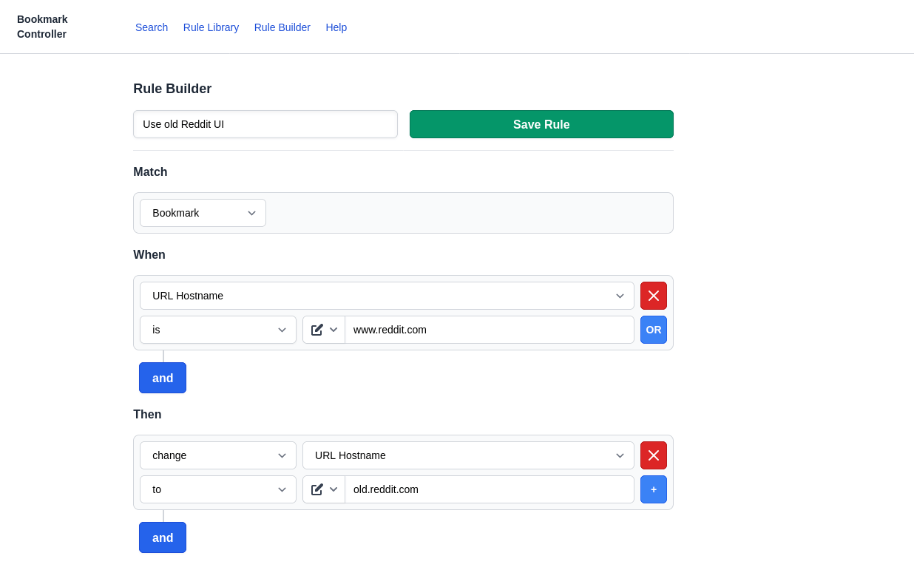
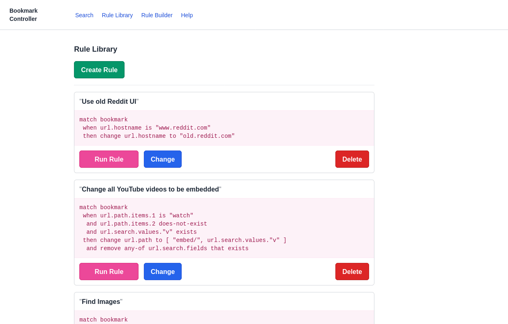
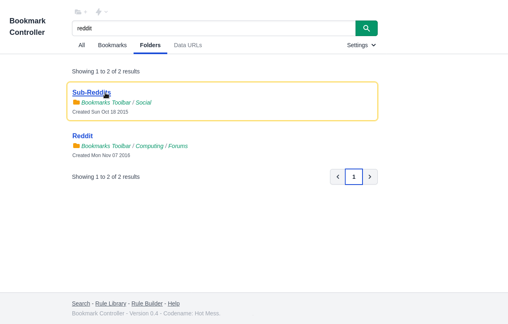
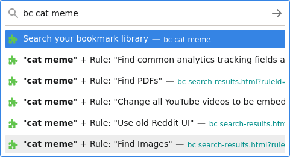

Introducing Bookmark Controller

About
Bookmark Controller version 0.4 (codename “Hot Mess”) is a Browser Extension that helps you search through and modify your Bookmarks, without making those modifications permanent.
Download
- Firefox Add-on
- Not available in Chrome store
Features
A search-engine-like user interface for your bookmark library

Fine-grained search and temporary modification of your bookmarks using Rules

A Rule Builder to quickly and easily make your own Rules

A Rule Library to store new Rules and discover existing ones

Search and filter for folders (and anything else you can think of)

Search and apply Rules from the Omnibox

Motivation
My browser’s bookmark library contains 34056 bookmarks, many of which have only been read once. To make matters worse none of them are tagged. Instead I rely on arcane groupings of deeply nested folders, the logic of which I have long since forgotten.
I made this WebExtension to make it easier for me to search through my library and to modify the results of those searches to meet my needs. I hope it nudges me towards checking my existing bookmarks instead of automatically reaching for Google every time I need to find something.
Previous versions of Bookmark Controller allowed bookmark modifications to be made permanent and Rules to be triggered when new Bookmarks were created. Ultimately I think these features were a bit too dangerous to include in a public release, and most of the benefits can be achieved without making modifications permanent.
It’s important to note that this is very much a proof-of-concept, so a bit rough around the edges. Hopefully it can provide some inspiration to anyone interested in expanding on the idea.
Post-mortem
I wanted to write about my experience implementing this project.
- How I intended to write everything in pure Javascript with no third-party dependencies.
- How the scope of the project expanded while I wasn’t paying attention.
- How flawed Javascript is.
- How I’m still glad it exists.
- How I never want to write another line of it.
But all this has been said before, and better then I could have put it. Bookmark Controller does everything I need it to do. My reserves of time and enthusiasm for this project are used up.
Author
Default Character
September 2021